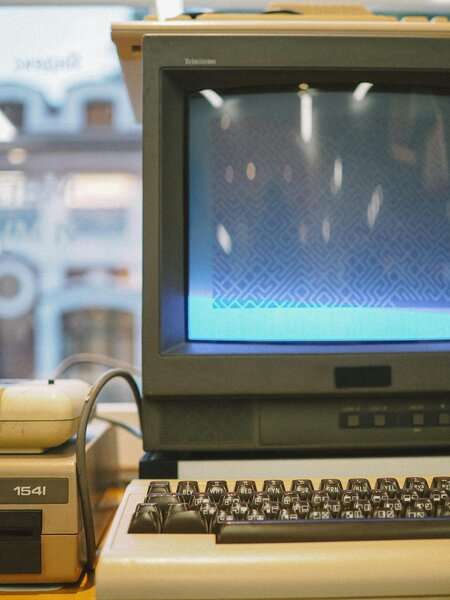

Hello and welcome to my personal website repository for all of my coding projects and adventures! This is a place where I want to share my past, present, and future projects with anybody that may find them interesting! This will take a lot of time to get fully fleshed out in terms of the amount of projects, seeing as I am currently a beginner programmer. But, with that being said, I hope that this website amounts to be a very helpful resource for people and possible future employers to evaluate my coding ability and practices. I will try my best to post the code files here whenever I make significant progress or finish a new project. I know what you may be thinking, “There like hundreds of different programming languages? How can you possibly expect to keep them all organized and available in one easy to read and manage location?” To that my response is that each page will be devoted to one individual language. This will hopefully provide some clear documentation, and also allow me to express my thoughts about learning each language within their respective pages. If I feel that two or more languages fall within the same project scope, I will likely combine them into one segment.

My first completely self-made project is right here, it is a simple simulation to show disease transmission with some basic physics.